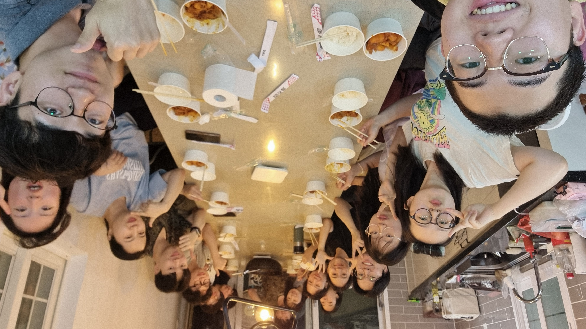
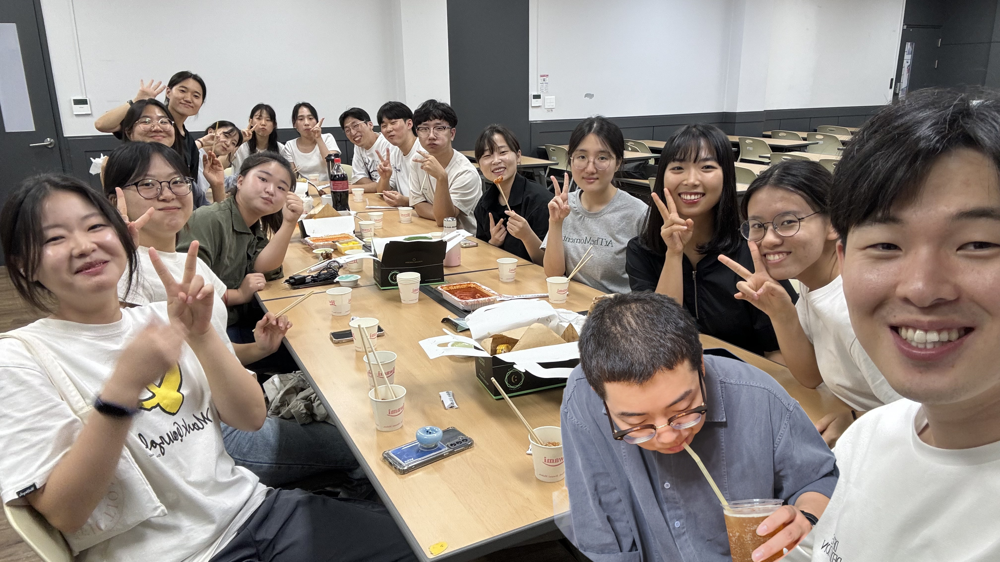
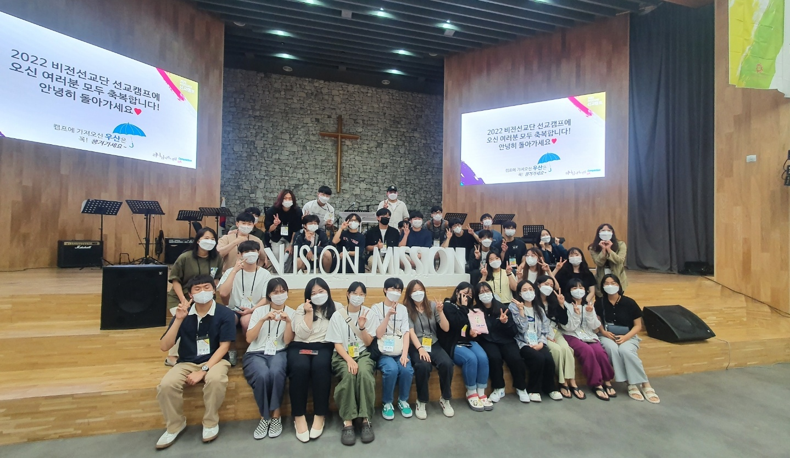

안녕하세요!
벌써 한해의 3분기를 지나가는 추석입니다. 매해 빠르게 흘러가는 시간이 아쉬운데, 그럼에도 가장 선하게 인도하시는 주님과 함께 행복한 하루하루를 보내시길 바랍니다.
저는 비전선교단 포항지부에서 청년들, 주로 한동대학생들을 섬기고 있습니다. 교회에 나오는 청년들의 수가 적어지고, 특히 신앙, 선교 공동체에는 청년들을 찾아보기 힘든 요즘이지만, 감사하게 많은 영혼들이 연결되어 섬기고 있습니다. 사람들을 섬기며 하나님을 알아가고 나를 돌아볼 수 있는 은혜의 자리에 있어, 바쁨 가운데 불평이 잠깐 나오다가도 감사를 고백할 수밖에 없는 것 같습니다.

<간사들끼리 MT하며>
최근 한 친구의 말이 저에게 참 와닿았습니다. 지난 학기에 비전선교단에서 훈련을 받고 이번 여름에 단기선교를 다녀온 20살 친구로, 같이 말씀을 묵상하고 나누는 시간이였습니다. 출애굽 백성이 금송아지를 섬기게 된 그 마음이 한순간에 발현된 것이 아니라 일상 가운데 하나님이 아닌 다른 것들을 선택하는 과정가운데 자라난 마음임에 대해서 묵상했었습니다. 같이 묵상 후에 나눔을 하는데, 그 친구가 다음과 같이 나누었습니다.
"예전에는 하나님을 사랑하는 마음과 믿음으로, 많이 고민하지 않고 말씀에 순종하고 주님이 기뻐하시는 것을 따랐어요. 근데 최근 좀 더 자라게 되면서 하나님의 말씀을 즉각적으로 따르기보단, 더 현실과 내가 원하는 것을 고민하면서 하나님이 아닌 것들을 선택하는 것 같아요. 이전보다 더 하나님을 따르지 못하고 있어요"
이 말을 듣고 솔직한 나눔이라고 격려해 주며, 우리 안에 하나님을 사랑하는 마음이 있지만, 세상의 수많은 거짓된 말을 들으며 우리의 기준이 말씀과 벗어나게 되고 세상의 방법을 따르는 게 나의 삶을 더 행복하고 통제할 수 있도록 만들어준다고 믿게 됨을 나눠주며 다시 일상 가운데 말씀을 따르도록 구체적인 이야기를 해주었습니다. 이렇게 말해주었지만, 개인적으로 기도하며 제 마음가운데 이 어린 친구의 나눔이 저의 상태와 같다는 것을 깨닫게 하셨습니다.

<한동대 학생간사들과 함께>
단순하게 말씀을 순종하며 하나님을 기쁘시게 하는 길을 선택하기보다, 얼마나 내 이해관계를 계산하며 하나님과 내 원함을 겸하여 섬기고 싶어 하는지를 보게 하십니다. 하나님을 누구보다 사랑하고, 하나님 한 분만으로 만족 삼겠다고 고백하며 나아온 걸음이지만, 정작 일상에서 공동체원을 사랑하지 못하고 내 기준으로 판단하며 낮아지기보다 내 옳음을 주장하려는 마음을 봅니다. 하나님의 종으로 살고자 하지만, 조금만 억울한 상황이 생기면 내 권리를 주장하고 하나님이 아닌 사람들 앞에 나를 변호하고 싶어 합니다.
한 책의 문장이 저의 이 마음을 드러내어 줍니다. "말이 많다는 것은 나를 옳게 보이고자 하는 마음이 크다는 것이다" 처음에는 크게 와닿지 않았던 말이지만 곱씹을수록 참 의미가 있다는 생각이 듭니다. 나를 옳게 보이고자 변론하고, 나의 권리를 빼앗기지 않고자 그저 침묵하기보단 합당한 기준을 제시하려고 말을 합니다.
[사53:7] 그가 곤욕을 당하여 괴로울 때에도 그의 입을 열지 아니하였음이여 마치 도수장으로 끌려 가는 어린 양과 털 깎는 자 앞에서 잠잠한 양 같이 그의 입을 열지 아니하였도다
예수님은 하나님과 동등한 권리와 능력이 있으시지만, 생명을 구원하기 위해 모든 권리를 내려놓으시고 종과 같은 형체로 복종하사 십자가에 달리셨습니다. 나를 위하여 예수님이 스스로를 변호하지 않으시고 죄의 대가를 감당하셨음을 기억함으로, 나의 작은 권리를 내려놓고 하나님만을 사랑하게 되기를 소망합니다. 겸손하게 복종하신 예수님의 이름을 하늘과 땅의 어떤 권세보다 높이신 하나님의 공의와 통치를 신뢰함으로 그리고 주님을 사랑함으로, 생명을 구원하기 위해 언제나 낮아지고 억울한 그 자리 가운데 기꺼이 나아가는 저와 모두가 되기를 소망합니다.
1. 이스라엘과 팔레스타인, 러시아와 우크라이나, 최근에는 일본과 유럽지역.. 세계 곳곳에서 고통받는 수많은 민족들에게 모든 죄와 사망을 승리하신 복음의 소식이 전파되도록 기도해주세요.
2. 저와 제가 섬기는 모든 친구들이 하나님을 더 사랑하고 믿음
3. 9월 27일부터 비전선교단 FS훈련이 시작합니다. 훈련생들이 하나님나라의 비전과 선한 목자이시며 아버지되신 하나님을 알아가는 시간이 되도록 기도해주세요.
* 오래 준비한 여름 캠프가 은혜 가득하게 마무리되었습니다. 3박 4일 동안 진행되었는데, 캠프 가운데 많은 은혜가 있어 사람들의 마음이 변화되는걸 보며 저도 참 놀랐습니다. 기도해주셔서 감사합니다.

<캠프 마치고 포항지부끼리>
* 비전선교단에서 진행하는 FS훈련이 곧 시작됩니다. 많은 이들이 이미 신청하고 기도로 준비하고 있는 훈련인데, 혹시 주변에 하나님에 대해서 더 알고 싶으며, 비전에 대해서 고민하는 친구들이 있다면 알려주시면 감사하겠습니다 :)
* 혹시 기도제목이 있으시다면 언제든지 편하게 나눠주세요. 작게나마 함께 기도하기 원합니다. (연락처 010-9674-7290)